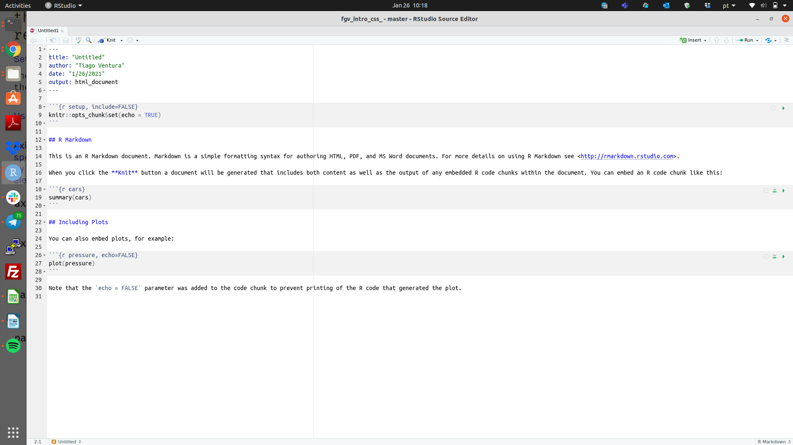

Tutorial sobre os exercícios.
Conforme explicado na ementa, as primeiras oito semanas de curso serão dedicadas exclusivamente a aprender R. Não há melhor forma de aprender do que praticando com seus próprios códigos e comentendo seus próprios erros. Por isso, teremos exercícios de R semanais ao longo das nossas primeiras oito semanas de curso.
Baixe exercício em RMD aqui
Quando devo entregar os exercícios?
Até que eu indique o contrário, o prazo para entrega dos exercícios é sempre sexta-feira, até meia noite. Exercícios entregues depois terão a nota reduzida.
Onde devo entregar?
Toda nossa comunicação será via nossa canal de Slack. Para entregar os exercícios, abra um chat privado comigo no slack, e entregue os exercícios.
Como devo entregar?
Os exercícios devem ser entregues em formato PDF, gerados a partir de um arquivo de Rmarkdown. Essa rotina será fundamental para vocês se familiarizarem com a geração de documentos dinâmicos em markdown.
Exercício 1.
Este primeiro exercício será somente para nivelarmos nossas infra-estrutural computacional. Se você completou todo o tutorial de instalação, este exercício deve ser resolvido em menos de 5 minutos. Caso o exercício retorne algum erro, busque soluções no google – eu programo em há 8 anos e faço isso todos os dias.
Questão 1
Copie e cole o código abaixo para o RStudio aberto em seu computador. E envie os resultados via Slack.
sessionInfo()
installed.packages()
Solução
Como este é nosso primeiro exercício, darei um passo-a-passo de como resolvê-lo.
- Passo 1: Complete o Tutorial 1.
- Passo 2: Abra o RStudio. No canto esquerdo superior, aperte file -> new file -> R Markdown.
Aparecerá uma tela como esta abaixo. O R Markdown está tornando sua via mais fácil e perguntando qual o nome do seu arquivo, e formato do documento a ser gerado. Selection a segunda opção .pdf e altere o nome do arquivo para “exercicio 1”

Em seguida, abrirá um arquivo como este:

Este é um arquivo do tipo .Rmd, e vamos discutir este tipo de arquivo na semana três. Para completar o exercício, você não deve alterar o topo do arquivo.
---
title: "Untitled"
author: "Tiago Ventura"
date: "1/26/2021"
output: html_document
---
Você pode alterar toda parte posterior. Os ## indicam o início de uma sessão no texto. O chuncks de texto em cor cinza são códigos de R.
Passo 3: Adicione o exercício em um desses chuncks
Passo 4: Clique na tab Knit no topo do seuscript. Essa função irá converter o arquivo .rmd para um .pdf.
Passo 5: Envie-me o pdf via Slack.
Até a próxima!